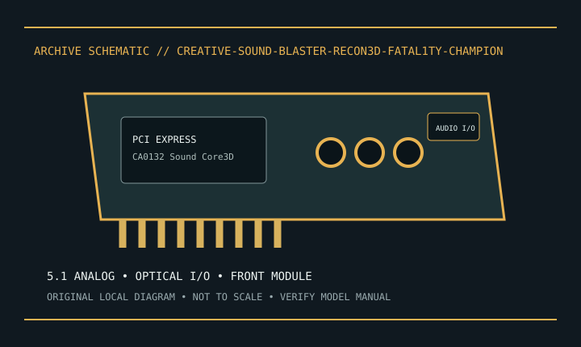

[ INDIVIDUAL MODEL // SOUND HARDWARE ]
Creative Sound Blaster Recon3D Fatal1ty Champion (SB1350)
SB1350 PCIe 5.1 model with optical I/O and Champion front-panel module; record module and cable separately.

Model-specific specifications
| Exact model / identity | SB1350 PCIe 5.1 model with optical I/O and Champion front-panel module; record module and cable separately. |
|---|---|
| Audio processor / codec / DAC | Creative Sound Core3D CA0132 integrates audio processing and conversion; Creative does not specify a separate DAC IC for this card. |
| Channels / resolution / sample rate | 5.1 analog playback to 24-bit/96 kHz; stereo digital playback may support up to 24-bit/192 kHz. Recording and multichannel rates vary by path. |
| Analog and digital ports | 5.1 analog output, optical S/PDIF input/output, and bundled front-panel module with headphone/mic connections and controls. |
| Slot / host interface | PCI Express x1 add-in card. |
| Operating-system support | Creative support documentation provides Windows 7-era driver packages. Verify current archived OS packages; no modern OS guarantee. |
Compatibility & preservation
Champion version includes different accessories from base Recon3D. Preserve front-panel module/cable and do not apply another Recon3D SKU’s driver assumptions.
- Photograph the card label, board revision, bracket connections and included accessories before service.
- Retain the exact driver, firmware and operating-system version known to work with this model.
- Confirm slot fit, connector pinout, breakout hardware, channel mode and supported sample rate before integration.
Manufacturer sources
- Creative Sound Blaster Recon3D Fatal1ty Champion — official supportManufacturer product, technical specification, or model manual source.
- Creative Sound Blaster Recon3D Fatal1ty Champion — official manualsManufacturer product, technical specification, or model manual source.